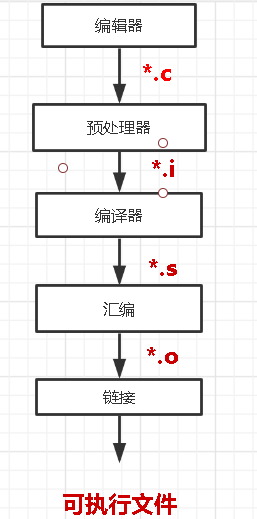
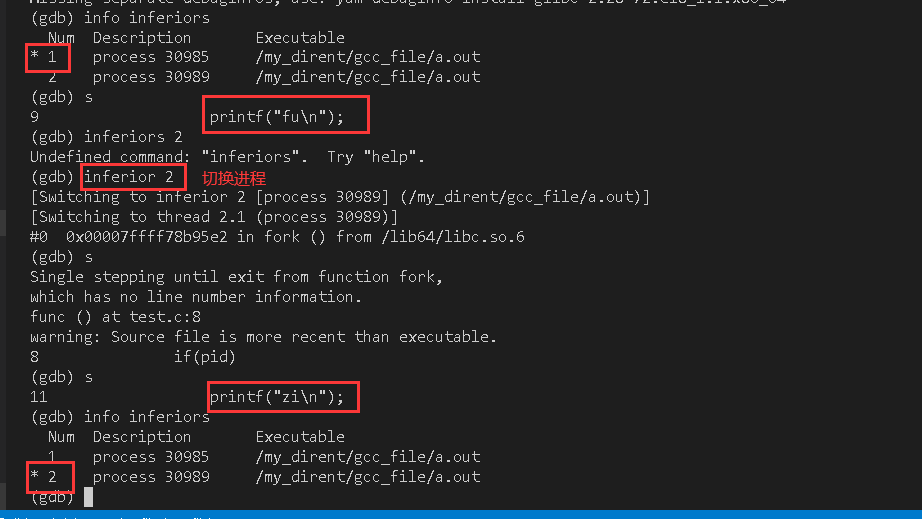
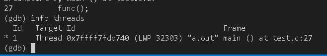
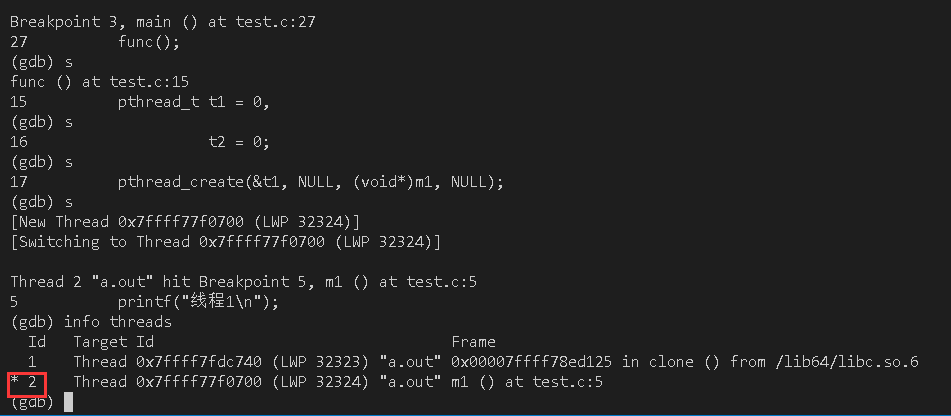
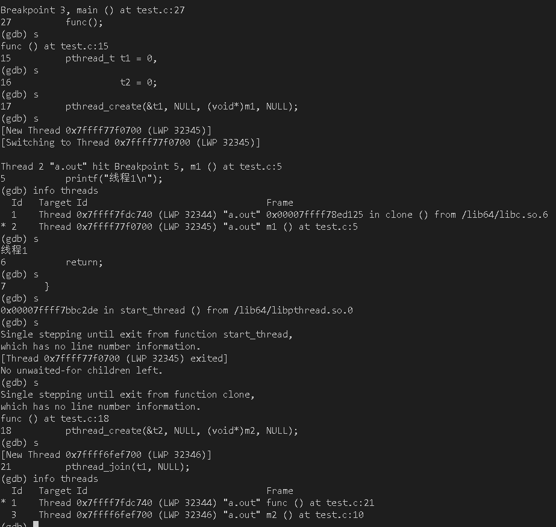
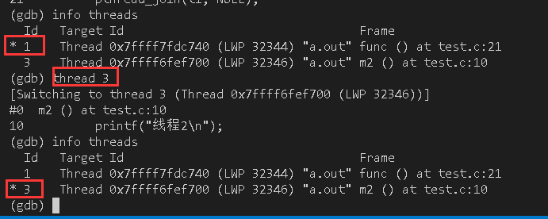

- 操作系统： CentOs_8 x86_64
- gdb版本： 9.1
- gcc版本： 9.3

编译流程

- 链接阶段: 将库文件链接到.o汇编文件
若是需要用gdb进行调试，gcc进行编译时必须加上-g选项
例子
| 名称 | 功能 |
|---|---|
| gcc | gcc的 绝对/相对 目录 |
| -g | 使用gdb进行调试 |
| test.c | c文件 |
| -o | 指定输出文件 |
| a.out | -o选项 输出的文件 |
相对目录
注意：gcc需要全局变量才能直接运行
1 | gcc -g test.c -o a.out |
绝对目录
1 | /usr/bin/gcc -g /mnt/my_dirent/gcc_file/test.c -o /mnt/my_dirent/gcc_file/a,out |
| 名称 | 功能 |
|---|---|
| whereis | 能查询软件安装的路径 |
gcc安装路径查询命令
1 | whereis gcc |
gdb的常用命令
| 名称 | 功能 | 简写 |
|---|---|---|
| gdb | 启动gdb | |
| gdb ./a.out | 打开gdb并打开文件 | |
| quit | 退出gdb | q |
| file ./a.out | 打开文件 | 无简写 |
| list | 查看10行代码 | l |
| run | 运行文件，若main有参数，则在run后面添加参数(如：run 10 20) | r |
| start | main函数处设置断点并run | 无简写 |
| next | 单步调试，不进入函数 | n |
| step | 单步调试，进入函数 | s |
| break 1 | 在第1行添加断点 | b 1 |
| delete breakpoints 1 | 删除第1个断点 | d 1 |
| shell clear | 清屏 | |
| print i | 查看变量i | p i |
gdb tui
gdb命令行形式的gui
进入gdb后输入
ctrl + x然后在输入一个a
需要传入main函数参数，就要喺run 或 start后面添加
1 | run version |
使用show args查看main函数参数
gcc 常用命令
| 写法 | 描述 |
|---|---|
| -g | 使用gdb |
| -o | 编译成指定文件 |
| -W | 示编译器认为会出现错误的警告 |
| -Wall | 编译后显示所有警告 |
| -c | 编译成.o文件（gcc -c a.c 会生成 a.o文件） |
| -lpthread | 启用线程功能 |
| -M | 与头文件生成依赖，包括标准库 |
| -MM | 仅与头文件生成依赖，不包括依赖库 |
| -l | 指定库文件目录 |
| -L | 指定库目录 |
| -Wl,–rpath=路径 | 指定动态库路径 |
| -Wl,–dynamic-linker=文件 | 指定动态库文件 |
| -I | 指定头文件目录 |
| -Werror | 将所有警告转换成错误 |
使用gdb调试多进程
需要设置
follow-fork-mode(默认值：parent)和detach-on-fork（默认值：on）
| 名称 | 状态 | 功能 |
|---|---|---|
| parent | on | 只调试主进程（GDB默认） |
| parent | off | 同时调试两个进程，gdb跟主进程，子进程block在fork位置 |
| child | on | 只调试子进程 |
| child | off | 同时调试两个进程，gdb跟子进程，主进程block在fork位置 |
首先需要进入gdb
1 | # 查看 |
1 | # 查看 |
| 写法 | 功能 |
|---|---|
| info inferiors | 查看当前所有进程 |
| inferior num | 切换第num个进程 |
1 | // 测试代码 |
将set detach-on-fork设置成off，在func()设置断点

使用gdb调试多线程
| 语法 | 功能 |
|---|---|
| info threads | 查看当前所有的线程 |
| thread num | 切换到第num个线程 |
1 | // 测试代码 |
在main()设置断点，此时线程1与2还没有创建

取消main()的断点，在m1()设置断点，此时拥有main线程与线程1

取消m1()的断点，在m2()设置断点，由于线程1已经运行完了，此时拥有main线程与线程2

切换线程

vs code调试多进程
将
setupCommands的text修改成
1 | "text": "-gdb-set detach-on-fork off" |
单步到进程的时候，在CALL STACK处选择进程进行debug
设置libstdc++库目录 与 指定gcc版本
1 | vim /etc/profile |
Debugging with gdb笔记
折叠
gdb -silent： 唔打印gdb开头信息打开gdb
想喺gdb内使用shell，需要喺shell命令前面加上shell。
- gcc需要使用
-g选项启用gdb调试功能 - 可以使用
cd切换gdb工作目录，pwd查看当前工作目录 - 将程序运行结果重新向到文件里
run > file - 子进程可以使用
kill结束
1 | shell clear |
日志输出
set logging [on | off]： 日志嘅开关set logging file new_FileName： 设置日志文件名称（默认为logfile）set logging overwrite [on | off]： 追加方式写入日志（默认） 与 覆盖方式写入日志set logging redirect [on | off]： gdb输出会打印到终端与logfile（默认）show logging： 查看当前日志设置
调试多线程与多进程
gcc生成库文件
静态库使用ar工具生成
静态库文件
1 | # 首先需要将*.cpp文件编译成.o文件 |
动态库文件
1 | # 生成-o文件 |
查看源文件嘅依赖文件
1 | # 包括库 |